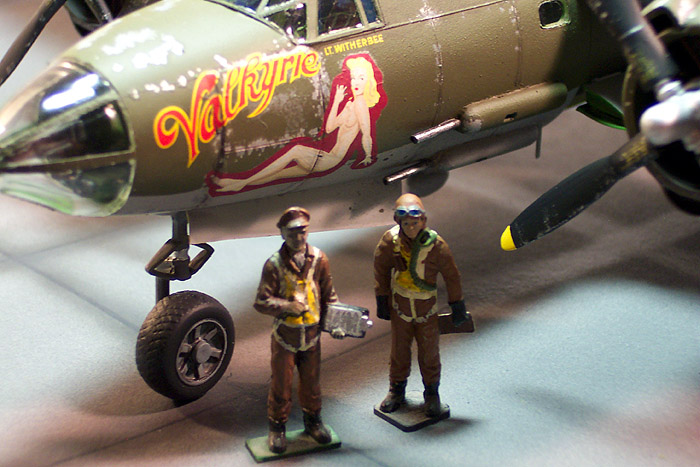
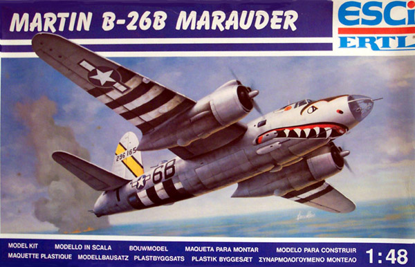
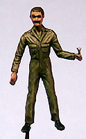
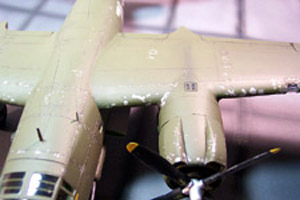

{kind=link}
{kind=link}
{kind=link}
{kind=link}
{kind=link}
{kind=link}

{kind=link}
Revell Interior Shots
{kind=link}
{kind=link}
{kind=link}
Click on any of the above images to view a larger picture
ESCI 1/48 B-26B Marauder & Revell 1/48 B-26B Marauder
A Head-to-Head Review

Images, text and models Copyright � 2004 by Matt Swan
Developmental History
The first Marauder flew on November 25, 1940, and production got under way three months later with an initial order for 1,100 aircraft. With a design that was perhaps one of the sleekest shapes of the Second World War, the Martin Marauder rode out a stormy passage at the beginning of its career. By Aug 1942 production modifications had increased the empty weight to 22,380 pounds, 34,000 pounds gross. With the short wingspan some pilots quipped that she had �no visible means of support� which ultimately resulted in the moniker �The Baltimore Whore�. As a result of an alarming number of training accidents she also acquired the name of �Widow Maker�.
In order to reduce the rate of training accidents, a decision was made to increase the wing area in order to lower the wing loading, reducing the takeoff and landing speeds. The new wing was first introduced on the B-26C production block at Omaha but did not appear on the B-26B line at Baltimore until the introduction of the B-26B-10-MA production block, which first appeared in January of 1943. However, the advantages of the reduced wing loading were partially offset by an increase in gross weight to 38,200 pounds.
The B-26B was the version of the Marauder that was built in the greatest quantity. Early models of the B-26 had two separate bomb bays, but the rear one was only used infrequently for light loads in the South Pacific. Eventually, the rear bomb bay racks were discontinued altogether. The B-26B differed from earlier Marauder versions in having two 50 caliber Browning machine guns with 1500 rounds per gun installed in a stepped- down tail position, replacing the single hand-held gun of the earlier B-26 and B-26A. A new tail position featuring a pair of 50 caliber machine guns increased the overall length to 58 feet 3 inches. The B version introduced self-sealing fuel lines and a rearrangement of various internal equipment items. The engines were switched to R-2800-5s and the large propeller spinners were deleted. The oil cooler air scoop under the engine cowling was also enlarged. Fuel supply included two 350-gallon main fuel tanks in the wings, two 121-gallon auxiliary tanks, and up to four 250-gallon bomb bay ferry tanks, for a total capacity of 1962 gallons. Normal bomb load consisted of two 2000 lb or 1600 lb bombs, eight 500-pound, sixteen 250 lb, or thirty 100-lb bombs. She could also be fitted with a variety of external loads including torpedoes.
Provisions were made for up to seven crew members. The bombardier sat in the transparent nose cone and operated a flexible 50 caliber Browning machine gun. The pilot and copilot sat side by side in armored seats behind an armored front bulkhead. The navigator/radio operator sat in a compartment behind the pilots. The beam gunner manned a single gun that fired through a hatch cut into the floor of the rear fuselage. A Martin 250CE dorsal power turret was mounted on the top of the fuselage behind the bomb bay. It was equipped with two guns and 400 rounds per gun. The turret could turn through a full 360 degrees and the elevation could be as much as 70 degrees.
The final production versions were the B-26F and G. A total of 5,157 Marauders were built and the type also served with the RAF, SAAF and the French Air Force. The Marauder was withdrawn from service in February 1946 and the B-26 designation was transferred to the A-26 Invader.
The Kits
ESCI

When I acquired these kits neither one was in production and at the time of this writing the Revell-Monogram kit had just been re-issued. The ESCI kit was acquired from E-Bay and the current market value of this kit (#4102) is approximately $50.00 USD.
I�m sorry that I don�t have pictures of the parts sprues for this kit either but in my excitement to get started building most parts had some work done on them before I thought to take some pictures, we�ll try not to let that happen again.
The ESCI (pronounced E-She) box is full of parts trees. The designers of this kit spent a lot of time working on interior detail including slide tracks for the belly gun windows, upper turret housing assemblies and a very well detailed bomb bay. The nose compartment shows excellent structural detail as well. The parts are all molded in a very soft, nearly white plastic that has a fair amount of light flash. Many parts display mold misalignments as well. There are not many injector pin markings and the few that are present are located in areas that require no trimming. All the parts need attention with a razor knife and sanding stick. The main fuselage and wing pieces feature finely raised panel lines, which was considered an industry standard when this kit was produced. All control surfaces have deeply engraved lines. There were a few slight sink marks on some of the larger pieces but nothing very serious. I have seen worst sink marks on contemporary kits. Also included with this kit are three crewmembers. We get one standing flight crewman and two ground crewmembers. Each is a two-pieces (front and back) assembly in poses that are quite different from anything I�ve seen in any other model package. These will make a nice addition to my collection of figures for various diorama purposes. There is an extensive tree of clear parts that are very nice other than the pervasive level of fine flash. When they are treated with a coat of Future Floor Finish they demonstrate very good clarity but the plastic itself is very brittle. If you try to remove them from the sprue with cutters you will cause splitting damage to the parts. Any clear part that has sprue attachments on opposite sides of the part must have at least one attachment cut with a razor saw first. Overall there are 137 individual pieces in the nearly white polystyrene and 25 clear pieces giving us a total of 162 pieces in this kit and you will need all but one of them (the clear leg for the aft end). A tidy sum indeed.
Instructions and Decals
Instructions for the ESCI kit consist of a large three-fold sheet that does not include any history or background on the aircraft, a color chart that lists basic colors by name and, surprisingly, by Federal Standard numbers, ten exploded view assembly steps with color call-outs and a section of exterior color directions and decal placement instructions.
Waterslide decals for two aircraft are provided in the kit. First is a US aircraft, the B-26B-55 �Big Hairy Bird� with some really cool looking teeth from the 397th Bomb Group, 598th Bomb Squadron out of the Eastern Theater of Operations during 1944 and the second is for a French aircraft B-26G �Bourgogne� from Armee� De L�Air which operated out of Corsica in 1944. The decals look to have good color density and good print registry. When I applied some decals from this very old sheet they behaved nicely and responded well to setting solutions. There are no service stencils provided for either aircraft.
Revell-Monogram
My copy of the Revell-Monogram kit is an older production release that I acquired from an estate sale. It had experienced some severe water damage at some point in the past resulting in major damage to the box and the decals had been totally destroyed. All the parts were present and still on the trees and the original instruction sheet was there so for a buck I could not walk away from it. At the time that I purchased this it was an out-of-production kit but just recently Revell of Germany has reissued it. Many of you know this already but for those that are not sure, I�ll spell it out. Revell of Germany and Monogram USA share molds back and forth on a regular basis. When you see a Monogram kit and then a few years later it shows up under the Revell nametag (or vice versa), maybe with different decals, it is the same plastic. Rarely, if ever, will anything be changed. The only exception to this that I can think of is the addition of Hamilton Standard propellers to the recent reissue of the Revell-Monogram 1/48 scale B-29 Super Fortress. Okay, I have digressed enough, let�s get on with the kit review.
This kit consists of five sprues of injection molded parts done in a dark olive drab polystyrene plastic. These are typical Revell-Monogram pieces featuring finely raised panel lines on all the exterior body parts with deeply engraved lines for the flight control separations. There is no flash on these parts but many of the smaller pieces display a fine mold separation line. I found one sink mark and that is on the �B� side of the radio direction finder on the ventral side of the fuselage. Interior detail for the cockpit and bombardier�s compartment is molded into the fuselage sidewalls and is not very prominent. The cockpit area has nice detail on the floor-pan, seats and throttle quadrant. The bombardier�s area has a nice rendition of the Nordan bombsight and a good interpretation of the bombardier�s couch. The bomb bay is very disappointing compared to the ESCI kit with two main bomb racks rather than the four that should be present. All the guns are very well detailed and the dorsal gun turret looks very nice from the pieces. The plastic is harder than that found in the ESCI kit but not to the point of being brittle. The kit provided parts to modify the tail gunner�s position to represent a major field modification found on some aircraft. This modification will require some surgery.
This kit also includes three flight crew members, a seated pilot, a seated gunner for the dorsal gun turret and a standing pilot figure. The standing figure is one that has made many appearances in other Revell-Monogram kits but the two seated figures appear to be unique to this kit. There is one medium sized sprue of clear parts. Where the ESCI kit featured window openings molded throughout the fuselage and many individual panes, especially around the tail gun position, Revell has cast larger clear parts with windows already molded in to represent the tail gun position. Two items that are obviously lacking from the Revell kit are the wingtip marker lights and the three formation lights located under the Port wing are simple mold representations where as on the ESCI kit there are clear lenses for these items.
All together we have 92 injection molded olive drab parts and 16 clear pieces giving us a total of 108 parts in the box. Not all these parts will be used dependant on the version you will be building.
Decals and Instructions
The instructions for this kit consist of a single large foldout that has some really odd orientation. What I mean by that is if you lay the sheet out on your work table half of it will be right side up while the other half is up side down, it makes it a little disconcerting when trying to get an overview of the entire construction process. We get a short historical background on the aircraft, the basic color chart, several exploded view construction steps and a good-sized section covering exterior painting and decal placement.
As I noted previously, the decals for this kit had been destroyed but from the instructions sheet I could see that the original kit included decals for two US aircraft; 'Flak Bait' which is on display at the National Air and Space Museum or 'Ninety' with it's modified tail gun position. The current release features markings for 'Idiot's Delight' as well as a French aircraft. I acquired a set of Cutting Edge decals to replace the kit decals with plans to do the 450 BS - Valkyrie.
Construction
I think what probably makes the ESCI kit so attractive is that fabulous box art of the �Big Hairy Bird�. It certainly worked on me. That is what I wanted to model for one aircraft and the nude nose art for the �Valkyrie� was my selection for the second aircraft. As I looked over these kits and considered both the parts fit and how much work was going to be required to finish the various seams I decided that it would be easier to do the Revell kit in a natural metal finish than the ESCI kit. With this in mind I switched the decals and used the Cutting Edge set for the ESCI kit and the �Big Hairy Bird� decals on the Revell kit.
Construction of both kits starts with the fuselage interiors. Historically there was considerable variance in the shades of green used on the interiors of these bombers so I did the interior of the ESCI kit with Model Master acrylic green zinc chromate and the Revell kit with Model Master enamel interior green. Landing gear bays for both kits were done with Testors enamel yellow zinc chromate. The bomb bay on the ESCI kit was done with the green zinc chromate while the Revell bomb bay was done in Testors enamel aluminum. Both kit interiors are washed with a sludge wash. Right away the differences in the kits become apparent.
ESCI Interior Shots.
Revell Interior Shots
Click on any of the above images to view a larger picture
Key points of interest between the kit fuselages.
1. Separate side panels give the ESCI more depth in cockpit and has better detailed control columns.
2. Revell offers more accurate seats and floor pan detail in cockpit and backside of instrument panel has detail added.
3. Revell has more accurate bombardier�s station including a better rendition of the bomb sight.
4. ESCI offers nice bulkhead detail forward of instrument panel that Revell totally lacks.
5. ESCI kit has better detailed bomb bay with six bombs included. Revell bomb bay is not nearly as nice and only includes four bombs.
6. ESCI kit provides interior window slide tracks for rear ventral gun windows where Revell�s instructions simply say to omit windows if in open position.
7. Revell offers much better detailed guns for the dorsal turret, ventral positions and tail gun position. Revell also has the seated gunner for the turret.
8. ESCI has all interior bulkheads while Revell has nothing between the aft bomb bay and the bulkhead forward of the tail gun position.
Moving into the wings and engine nacelles many more differences become apparent. Both kits suffer from large gaps around the engine nacelle to wing joint. In the pictures below see arrows labeled 1 for those items. Each kit has particular detail items that are nice such as arrow number 2 on the Revell kit � this is the door retraction arm, which is not included on the ESCI kit. The ESCI kit does include more strut detail pieces and has a more accurate strut placement pattern. Note that the ESCI gear bay is much wider than the Revell, which is correct? I have no idea. The ESCI engine cowling has a nice round front profile while the Revell cowling is more oval. In reviewing video of the Marauder in flight the round cowling with a more open engine area looks to be more accurate. Arrow number three indicates the identification lights that are well represented on the ESCI kit and include individual lenses while on the Revell kit they are not as prominent and you would have to make your own lenses from clear cement or clear plastic stock.
Where the upper front area of the nacelle meets the wing the Revell kit has a lot cleaner connection than the ESCI but both need some work there as well. At the rear of the nacelle the ESCI part mates to a continuance of the upper wing surface and needs a little trimming with a razor knife to blend in well. The Revell kit uses an independent piece at the rear of the nacelle and the fit is very bad requiring multiple applications of putty to fill huge gaps so this kind of makes up for the difference in work needed at the front of the nacelle.
I have decided to build the ESCI kit with the gear down and the bomb bays open, this kit will be displayed on the shelf. The Revell kit will be built all buttoned up and in flight to be displayed in the ceiling air force. The ESCI kit does provide a clear leg to be installed at the aft end to prevent it from being a tail sitter but I would rather add nose weight and dispense with the clear leg. To do this I have taped the main pieces together and stuck the tail surfaces in place then started adding weight until I reached a point where the nose gear sat securely on the ground. It took almost a half a pound of fishing lead in the radio compartment to achieve this. Once the amount was determined I removed the tape, opened the model back up and super-glued the weights in place.
For the Revell kit I removed all the door hinges from the gear doors and bomb bay doors then glued them in the closed position with Tenex 7R. The main gear doors were glued into the engine nacelles before the nacelles were mounted to the wings and the nose gear and bomb bay doors were placed prior to closing up the fuselage. If I had wanted to build the Revell kit �gear down� their solution to the tail-sitting problem is a boarding ladder to be installed in one of the rear gun windows, obviously I won�t be using this piece.
Both kits require that a variety of clear parts be installed in the fuselage before closing it up. All clear parts have been polished with a Micro Sheen tack cloth and dipped in Future Floor Polish. The various fuselage windows for the ESCI kit were masked with masking tape then installed with Testors Clear Parts Cement while the Revell kit was masked with Cutting Edge Black Magic masks prior to installation.
While the fuselage assemblies dry let�s take a look at the engines;
ESCI Engines
Revell Engines
The ESCI kit gives the modeler one complete, two bank engine assembly with exhaust pipes. The second engine is only a bank and a half affair without the exhaust collectives. The engine pieces are well formed with just a small mold seam that needs to be shaved off. The carburetors are undersized for scale but all other detail is well rendered. If you were so tempted, you could cut open some engine panels and display this bird having some engine service done. The engine cowlings are each a three-piece arraignment with individual upper intake scoops that fit into molded trenches. Total pieces to build two engines and cowlings = 16.
The Revell kit simply gives you two engine facings to insert into the cowlings. There is very little soft detail on the engine cylinders and the carburetors have huge sink marks in each one. Notice how the upper half of the cylinder banks have been cut off to make them fit into the cowlings, makes me wonder about the scale correctness of the cowlings. The cowlings on this kit are also three-piece arrangements but the engineering of the upper scoops leaves three large gaps that need filling. Total pieces to build two engines and cowlings (including propeller shafts) = 10.
Overall the ESCI engine and cowling outperforms the Revell engine and cowling in accuracy and appearance. The fit of this subassembly is better and the detail is superior to the Revell offering. The ESCI kit also gives the modeler the opportunity to open service panels around the engine with minimal work, which is virtually impossible on the Revell kit without aftermarket materials and major surgery.
Both fuselages are closed up now and have similar minor seam discrepancies, pressure needs to be applied at various points to get the pieces to line up correctly but nothing serious for either kit. Both need some very minor amounts of putty to finish off the fuselage seam. Once the wings are attached both kits require a fair amount of putty on the left wing root. The right wing root met just fine on both kits but that left root had a small step down that had to be filled, I wonder why that happened to both kits. Looking at the remaining clear parts I masked the rest of the ESCI pieces with strips of masking tape and other than being time consuming ran into no problems. On the Revell kit I found the top turret has no panel lines to follow and the Black Magic masks for this piece are totally useless. I need to use the ESCI turret as a guide and mask the Revell turret with masking tape. The Black Magic mask set does not include anything for the nose cone either � what a bummer.
Both kits include three crew members. Before closing up the fuselage of the Revell kit I had painted and installed the turret gunner. In the pictures below the three figures to the left with blue backgrounds are the ESCI crewmembers and the three to the right with red backgrounds are the Revell crewmembers. All figures required about the same level of clean-up prior to painting.

As I move towards assembly of the larger subassemblies on each kit I found that putty was needed on the port (left) wing root to fair it into the fuselage. The Starboard side lined up just fine on both kits. Both kits need a lot of attention at the aft end also. The ESCI kit features a separate rudder where as the Revell kit has it molded right in. Both require some putty to fair in the elevator to the fuselage. I feel that the ESCI kit has a better window arraignment for the tail gunner than the Revell kit. The ESCI clear pieces have very nice panel line definition while the Revell kit has none on the tail cone and light definition on the upper clear piece. I used Black Magic masks for part of the Revell kit then completed the compound curve masking with strips of masking tape. The ESCI kit was completely masked with masking tape. The Revell kit has better defined formation lights than the ESCI kit has.
After the seams had all been cleaned up I restored the lost raised panel lines on both kits by pressing my razor knife into the line area and raising a slight ridge. Landing gear bays, open gun windows and engine faces were all packed with tissue paper that I applied drops of water to, helping shape it and hold it in place. I went over all the masks one last time to make sure they were all secure and burnished edges down with a toothpick. The ESCI kit gets a coat of Model Master Gray primer while the Revell kit gets a Krylon Gloss Black primer.
ESCI Pre-paint shots

Revell Pre-paint shots
Remember, you can click on those images to view larger pictures
After the primer had dried I went over each kit looking for defects in the seams or any other spots that might need touch up with a sanding stick before final color coats go on. The ESCI kit is prepared for chipping with the salt chipping system before proceeding to the final paint stage. Once that was completed the kit had its undersides painted with Testors flat gray enamel then was masked off for an overcoat of Testors flat olive drab. The Revell kit was completely coated with Alclad 2 Aluminum. I used my Badger 360 to paint the ESCI kit and my Badger 150 to lay down the Alclad on the Revell kit. Once the Alclad had dried I began to mask the wings and fuselage off for some dark aluminum contrast panels. The central wing panels, elevator panels and a few other odd panels will be done with this. The ESCI kit had the salt crystals removed then could go right to its Future coat in preparation for decals.
Both kits have had overnight to dry and I can get busy masking the invasion stripe on the Revell kit now. I also need to mask off the anti-glare panels and hit them with some Testors flat olive. I painted the entire area for the invasion strips flat white then masked again for the flat black. This color scheme may seem simply but has consumed more masking tape and bathroom tissue than any other scheme that I can recall. The ESCI kit gets two good coats of Future Floor Polish to seal the paint and is set aside to cure for twelve hours. The masks have been removed from the Revell kit and it will need a little touch-up where some of the black blew under the masks before it is ready for Future.
Click on these pictures for larger images
Decals have been applied to the ESCI kit with no troubles. They were sealed with a coat of Future then the aircraft was weathered with an ink based sludge wash, sealed again with Polly Scale Clear Flat and then exhaust accents were added with ground pastel chalks. I used the original ESCI decals for the Revell kit. There were a few slight size discrepancies with the tail band � had to stretch the gap for the fin numbers a little bit and the green eyebrow decal was a little short up front. I added a little bit of a strip with some orange paint to blend it in. I sealed this one with Future then brush painted some clear flat where I wanted to add exhaust stains as the chalk will not stick to the glossy Future finish. I purposely left this aircraft very clean.
Conclusions
Neither one of these is a real easy build. Both have some very nasty gaps around the wing to nacelle areas and both have some fit issues at the main wing root. The Revell kit is a real pain around the clear parts at the tail. Both required about the same amount of filler and sanding down the main body seam. The ESCI kit has oversized engine faces compared to the Revell and I am not about to advocate which one is more accurate. Personally I like the look of the ESCI engines better. The ESCI kit offers a much better interior while the Revell kit has better detail in all the gun positions. The crew figures are slightly better with the Revell kit but the ESCI figures are more unique in their poses. The Marauder was an important aircraft during WW2 and either one of these makes a nice addition to any warbird collection.
ECSI Pictures
You can click on any of these pictures to view larger images

Revell Pictures

Now that all the paint has dried and the decals are all sealed I discover a painting error on the �Big Hairy Bird�. Seems the entire nose section should be yellow but my reference material did not show this � oh well, some you win, some you lose.


{kind=link}
{kind=link}
{kind=link}
{kind=link}
{kind=link}
{kind=link}
{kind=link}
{kind=link}
{kind=link}
{kind=link}
{kind=link}
{kind=link}
{kind=link}
{kind=link}
{kind=link}
{kind=link}